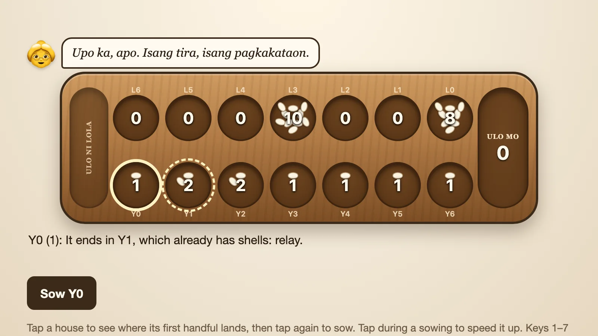

Isang Tira
Sungka against Lola Iska

PuzzleMouse · TouchFree, in the browser
Play Isang TiraAbout the game
Upstairs in her old bahay na bato (stone house), on a sunny afternoon, Lola Iska has the sungka board out on the table, her coffee and spectacles beside it. She would like a game. Isang Tira, "one move", is sungka played the traditional way: turns, relays, captures, and round after round until somebody runs short of shells.
The board is a scan of a real hand-carved Filipino sungka board. You never see Lola herself, only her chair, her things and her handful of shells moving over the board. There is also a daily puzzle: one board a day, the same for everyone, where you get a single turn to score as much as you can.
How to play
The board has two rows of seven small holes called houses, one row for each player, and a big store at each end called the ulo (head). Every house starts with seven shells. You play the bottom row. On your turn, pick one of your houses, scoop up all its shells, and sow them one at a time into each hole along the way, including your own ulo and on into Lola's row. Where the last shell lands decides what happens next:
- In your own ulo: you get another turn.
- In a house that already has shells: scoop them all up and keep sowing. This is a relay.
- In one of your own empty houses: you capture the shells in Lola's house straight across.
- In one of Lola's empty houses: your turn ends and she plays.
When one side runs out of shells, the other player keeps what is left on their side and the round ends. For the next round, each player refills their houses with seven shells from their ulo. Any house you cannot fill is sunog (burnt) and sits out the round. You can play a single round, three rounds, or hanggang maubos (until it runs out), the traditional game that continues until one player cannot fill a single house. Whoever holds more shells at the end wins.
Lola comes in three strengths. On Madali (easy) she looks one sowing ahead and sometimes slips. On Katamtaman (medium) she looks two ahead. On Mahirap (hard) she looks three ahead and thinks about your best reply. Your game is saved as you go.
- Mouse and touch: click or tap one of your houses to sow from it.
- Keyboard: keys 1 to 7 pick a house, and Tab or the arrow keys move between them.
In the daily puzzle, tapping a house shows where its first handful will land; tap again to sow. Counting the relays after that is up to you. You get three tries, and after a miss you can ask for Bulong ni Lola (Lola's whisper), which shows the whole sowing. Boards get harder through the week.
Tips
- Count before you move. A house with the right number of shells to end exactly in your ulo earns a free turn, and free turns are where big scores start.
- Play those exact-landing houses first, usually from the ones nearest your ulo, before other moves change their counts.
- Keep an eye on your empty houses. Each one is a possible capture if you can land a last shell in it.
- Watch Lola's empty houses too. A big pile of yours sitting across from one is a target.
- Near the end of a round, remember that shells still on your side are yours to keep if Lola runs out first. There is no need to hurry them into her row.
Sungka, the shell game
Sungka belongs to the mancala family, one of the oldest kinds of board game in the world, played across Africa and Asia under many names. Its closest relatives are in nearby countries: congkak in Malaysia and Indonesia works in a very similar way. In the Philippines the board is usually carved from a single long piece of wood, sometimes in the shape of a boat, and the playing pieces are small shells called sigay, though pebbles or seeds do the job too.
For generations it has been a game of afternoons at home: siblings on the floor, a grandmother teaching the grandchildren, neighbors sitting on the porch. It also quietly teaches counting, since a good player is always working out where a handful will end.
That is the feeling the game is after. Lola Iska will not go easy on you on Mahirap, but she is always happy to play another round.